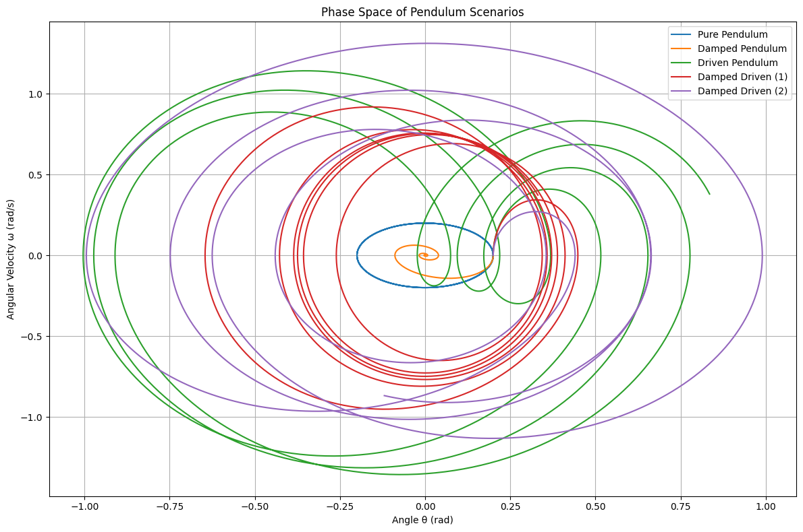
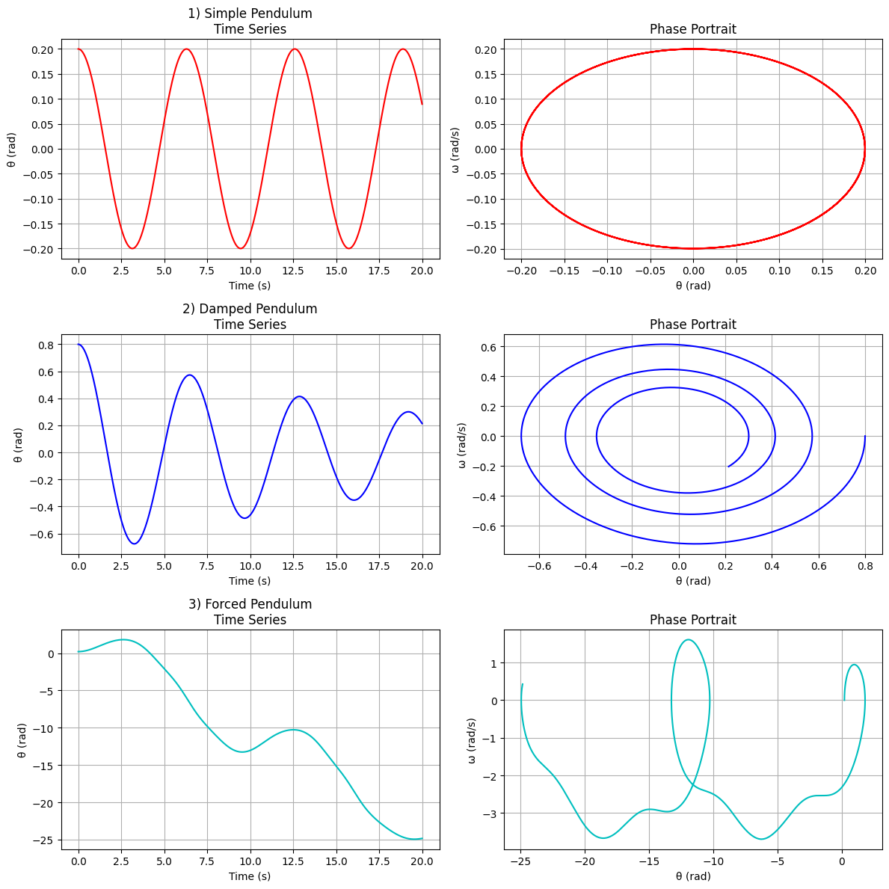
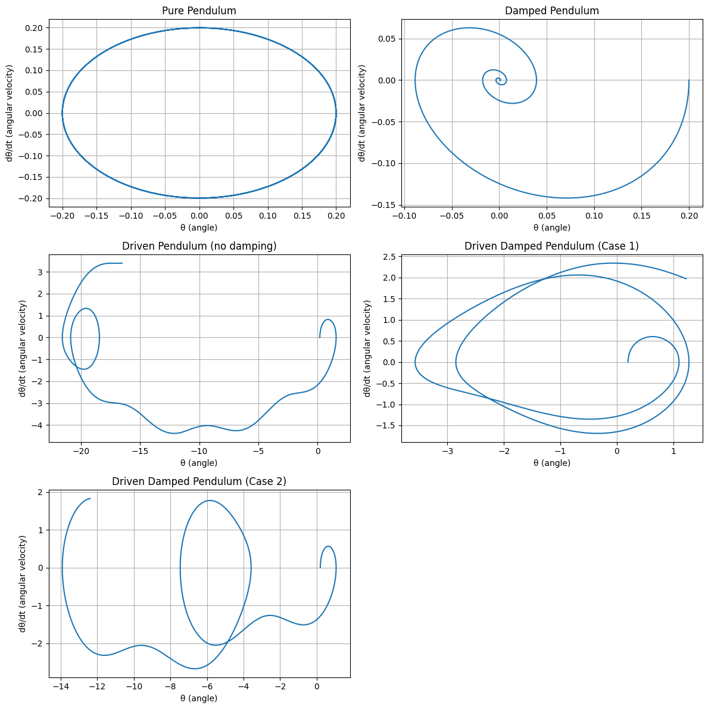

Problem 2
Investigating the Dynamics of a Forced Damped Pendulum
1. Theoretical Foundation
1.1 Governing Equation
The equation of motion for a forced damped pendulum is:
Where:
- \(\theta(t)\) is the angular displacement
- \(b\) is the damping coefficient
- \(g\) is gravitational acceleration
- \(L\) is the length of the pendulum
- \(A\) is the amplitude of the driving force
- \(\omega\) is the driving frequency
1.2 Small-Angle Approximation
For small angles (\(\theta \ll 1\)), we approximate \(\sin\theta \approx \theta\), reducing the equation to:
This is a linear second-order differential equation describing a damped, driven harmonic oscillator.
1.3 Resonance
Resonance occurs when the driving frequency \(\omega\) matches the natural frequency \(\omega_0 = \sqrt{\frac{g}{L}}\). At resonance, the system absorbs energy most efficiently, leading to large oscillations (limited only by damping).
The steady-state amplitude response \(\Theta(\omega)\) for the linearized case is:
This curve demonstrates resonance behavior and is important for identifying the critical driving frequency.
2. Analysis of Dynamics
2.1 Parameter Dependence
- Damping coefficient (\(b\)):
- Controls energy dissipation
- Low \(b\): resonance peak is sharp
-
High \(b\): oscillations decay quickly, response is flatter
-
Driving amplitude (\(A\)):
- Larger \(A\): stronger external influence
-
Can drive the system into nonlinear or chaotic regimes
-
Driving frequency (\(\omega\)):
- If near \(\omega_0\): resonance
- Away from \(\omega_0\): weak or slow oscillations
2.2 Transition to Chaos
When the small-angle approximation is no longer valid, the equation becomes nonlinear. For certain values of \(A\), \(\omega\), and \(b\), the system exhibits:
- Period doubling
- Quasiperiodicity
- Chaotic motion (sensitive dependence on initial conditions)
To analyze this, phase portraits and Poincaré sections (sampling phase space at intervals of the driving period) are useful.
3. Practical Applications
The forced damped pendulum is a model for many systems:
- Energy harvesting: Mechanical systems coupled to electromagnetic or piezoelectric generators
- Suspension bridges: Dynamic loads (e.g., wind) may cause resonance
- Clock mechanisms: Pendulum dynamics must be stabilized for accurate timekeeping
- Oscillating circuits: Driven RLC circuits act as electrical analogs
- Biomechanics: Human gait and balance involve pendulum-like dynamics under control
4. Implementation
4.1 Python Simulation
import numpy as np
import matplotlib.pyplot as plt
from scipy.integrate import solve_ivp
# Pendulum differential equation
def pendulum(t, y, b, A, omega):
theta, omega_theta = y
dydt = [omega_theta, -b * omega_theta - np.sin(theta) + A * np.cos(omega * t)]
return dydt
# Time span and evaluation points
t_span = (0, 20)
t_eval = np.linspace(*t_span, 1000)
# Initial conditions: small angle, zero initial velocity
y0 = [0.2, 0]
# Define different scenarios
scenarios = {
"Pure Pendulum": {"b": 0.0, "A": 0.0, "omega": 0.0},
"Damped Pendulum": {"b": 0.5, "A": 0.0, "omega": 0.0},
"Driven Pendulum": {"b": 0.0, "A": 1.2, "omega": 2.0},
"Damped Driven (1)": {"b": 0.5, "A": 1.2, "omega": 2.0},
"Damped Driven (2)": {"b": 0.2, "A": 0.8, "omega": 1.5}
}
# Solve the ODEs
results = {}
for name, params in scenarios.items():
sol = solve_ivp(pendulum, t_span, y0, args=(params["b"], params["A"], params["omega"]), t_eval=t_eval)
results[name] = sol
# Plot phase space
plt.figure(figsize=(12, 8))
for name, sol in results.items():
plt.plot(sol.y[0], sol.y[1], label=name)
plt.title("Phase Space of Pendulum Scenarios")
plt.xlabel("Angle θ (rad)")
plt.ylabel("Angular Velocity ω (rad/s)")
plt.legend()
plt.grid(True)
plt.tight_layout()
plt.show()



4.2 Pendulum
To investigate chaotic dynamics in the forced damped pendulum, we visualize the motion using:
- Phase Space: Plot of \(\theta\) vs \(\frac{d\theta}{dt}\)
- Poincaré Section: Discrete samples of the system at each driving period
Let the driving period be:
We sample the pendulum state \((\theta, \dot{\theta})\) at times \(t = nT\).
# Pendulum
import numpy as np
import matplotlib.pyplot as plt
from scipy.integrate import solve_ivp
# Time span and time points
t_span = (0, 20)
t_eval = np.linspace(*t_span, 1000)
# 1. Simple Pendulum
def simple_pendulum(t, y):
theta, omega = y
dydt = [omega, -np.sin(theta)]
return dydt
sol1 = solve_ivp(simple_pendulum, t_span, [0.2, 0], t_eval=t_eval)
# 2. Damped Pendulum
def damped_pendulum(t, y, gamma=0.1):
theta, omega = y
dydt = [omega, -gamma * omega - np.sin(theta)]
return dydt
sol2 = solve_ivp(damped_pendulum, t_span, [0.8, 0], t_eval=t_eval)
# 3. Forced Pendulum
def forced_pendulum(t, y, gamma=0.2, A=1.5, omega_drive=2/3):
theta, omega = y
dydt = [omega, -gamma * omega - np.sin(theta) + A * np.cos(omega_drive * t)]
return dydt
sol3 = solve_ivp(forced_pendulum, t_span, [0.2, 0], t_eval=t_eval)
# Plotting
fig, axs = plt.subplots(3, 2, figsize=(12, 12))
# Simple
axs[0, 0].plot(sol1.t, sol1.y[0], 'r')
axs[0, 0].set_title("1) Simple Pendulum\nTime Series")
axs[0, 1].plot(sol1.y[0], sol1.y[1], 'r')
axs[0, 1].set_title("Phase Portrait")
# Damped
axs[1, 0].plot(sol2.t, sol2.y[0], 'b')
axs[1, 0].set_title("2) Damped Pendulum\nTime Series")
axs[1, 1].plot(sol2.y[0], sol2.y[1], 'b')
axs[1, 1].set_title("Phase Portrait")
# Forced
axs[2, 0].plot(sol3.t, sol3.y[0], 'c')
axs[2, 0].set_title("3) Forced Pendulum\nTime Series")
axs[2, 1].plot(sol3.y[0], sol3.y[1], 'c')
axs[2, 1].set_title("Phase Portrait")
for ax in axs.flat:
ax.set_xlabel('Time (s)' if 'Time Series' in ax.get_title() else 'θ (rad)')
ax.set_ylabel('θ (rad)' if 'Time Series' in ax.get_title() else 'ω (rad/s)')
ax.grid(True)
plt.tight_layout()
plt.show()

